2025 年最值得信赖的 VPN：我们的十大精选

"呃，我应该选择哪个 VPN...它们看起来都一样！"
你有没有遇到过这样的困惑？市面上的VPN描述看起来都大同小异，都号称自己是"最安全的"，但实际使用起来，它们之间到底有什么区别呢？
我应该选择 NordVPN 还是 ExpressVPN？没人能保证万无一失。
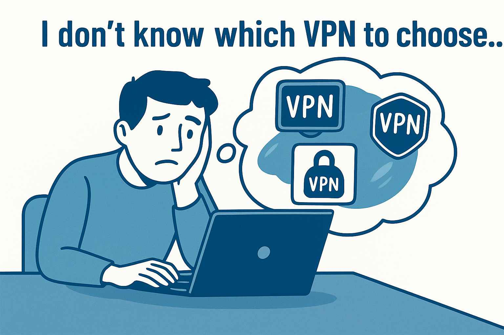为了节省你搜索信息和比较评论的时间，我整理了
这次，我们不会重复每个人都拥有的"基本功能"，而是直接关注每个 VPN 的独特优势和劣势。
为什么要相信我的 VPN 评论？
对我来说，使用 VPN 不是可选的，而是必需的。
多年来，我亲自测试了数十种 VPN：从跨地区播放 Netflix 和 YouTube，到安全使用公共 Wi-Fi、下载不常用的文件以及远程工作。
我只推荐那些我真心愿意长期使用的VPN——那些我认为真正有价值的服务。如果本指南能帮你避免浪费金钱或做出错误的选择，那么它就发挥了它的作用。
什么是 VPN？
VPN（虚拟专用网络）是一种加密连接技术，可在你的设备（计算机、智能手机、平板电脑等）和互联网之间创建安全的"虚拟隧道"。它会加密你的数据并隐藏你的真实 IP 地址，保护你的在线活动免受不必要的监控。
为什么要使用 VPN？
保护你的隐私并保持匿名
你在网上进行的一切活动——你的搜索、你点击的链接、你访问的网站——都可能被广告商、追踪器甚至你的互联网服务提供商 (ISP) 追踪。VPN 就像一道隐形的屏障：它隐藏你的真实 IP 地址并加密你的流量，防止第三方监视你的在线行为。
解锁全球内容
你是否知道，在韩国观看 Netflix 的内容与在美国或英国观看的内容有所不同？许多节目、电影和游戏都受到特定国家/地区的地理限制。VPN 让你一键切换 IP 地址，从而可以无边界地浏览全球网站、流媒体平台和游戏服务器。
确保公共 Wi-Fi 安全
公共 Wi-Fi 网络是网络攻击的热点。黑客经常设置虚假网络或拦截数据，窃取登录凭据、银行密码、聊天记录或敏感文件。VPN 可以在你和互联网之间建立一条安全加密的隧道，即使在酒店、机场或咖啡馆的 Wi-Fi 上也能保障你的数据安全。对于旅行者、远程工作者和忙碌的商务人士来说，VPN 尤为重要。
绕过审查并访问受限内容
在某些国家和地区，Google、YouTube、Instagram 或 WhatsApp 等平台可能会被屏蔽。VPN 可以帮助你自由访问这些网站和应用，为你打开一扇通往世界的大门。对于外籍人士、国际学生和全球专业人士来说，VPN 可确保你无论身在何处都能安全、不受限制地访问互联网。
2025年值得信赖的十大VPN
| VPN | 无日志 | 安全功能 | 成本效益 | 速度 | 安全 | 服务器支持国家 |
|---|---|---|---|---|---|---|
| ⭐⭐⭐⭐⭐ | ⭐⭐⭐⭐⭐ | |||||
| ⭐⭐⭐⭐⭐ | ⭐⭐⭐ | |||||
| ⭐⭐⭐⭐ | ⭐⭐⭐⭐⭐ | |||||
| ⭐⭐⭐⭐ | ⭐⭐⭐ | |||||
| ⭐⭐⭐⭐ | ⭐⭐⭐ | |||||
| ⭐⭐⭐ | ⭐⭐⭐ | |||||
| ⭐⭐⭐ | ⭐⭐ | |||||
| ⭐ | ⭐ | |||||
| ⭐⭐ | ⭐⭐ | |||||
| ⭐⭐ | ⭐⭐ |
1：NordVPN——2025年最佳VPN
持续优化速度和稳定性
在我看来，NordVPN 绝对当之无愧地位居第一——我相信大多数 VPN 用户都会同意这一点。自 2021 年以来，NordVPN 的性能稳步提升，尤其是在速度和连接稳定性方面。升级到 10Gbps 服务器网络后，连接体验几乎与不使用 VPN 浏览一样流畅。无论你是在线观看高清内容还是下载大型游戏文件，都几乎不会出现任何明显的延迟。
真正让我印象深刻的是，NordVPN 支持最多
顶级安全性：最安全的VPN
NordVPN 被公认为最安全的 VPN 之一。它提供双重 VPN 服务，将你的流量路由到两台服务器（而非一台），从而增加了额外的保护。这让我安心，因为即使一台服务器被入侵，第二层保护也能帮助降低潜在风险。
NordVPN 总部位于巴拿马，不受数据保留法律的约束，这与其严格的无日志政策完美契合。在十多年的运营中，它从未将用户数据移交给任何机构——这也是我信任其隐私承诺的另一个原因。
NordVPN 的另一大优势在于其全球范围内
庞大的全球服务器网络
截至 2025 年 7 月，NordVPN已在164 个国家和地区运营着7，155 多台服务器的庞大网络。虽然一些竞争对手可能拥有更大的服务器数量，但真正重要的是服务器的质量和性能。在实际使用中，NordVPN 始终提供快速、流畅的连接，无延迟或缓冲。
最适合谁
远程工作者、经常旅行的人、重度流媒体用户、精通技术的高级用户、拥有多台设备的家庭以及注重隐私的个人。
优点和缺点
优点
严格的无日志政策 ——NordVPN 总部位于巴拿马，合法运营且不存储用户日志，确保完全的隐私。超值 – 价格实惠的 2 年计划，功能强大。-
Double VPN 和 Onion Over VPN – 额外的加密层和对 Tor 网络的安全访问。 -
NordLocker 加密云存储 – 使用安全的云存储保护你的文件。 -
2FA 支持 – 通过双因素身份验证增加额外的帐户保护层。 提供专用 IP – 可选法国、德国和美国等国家的固定 IP 地址（需额外付费）。同时使用 10 台设备 - 非常适合家庭或小团队。
缺点
速度提升 ——以前这是一个问题，但现在 NordVPN 已经解决了这个问题，并且跻身业内最快的速度之列。
价格实惠
NordVPN 的速度和安全性与其他顶级 VPN 不相上下，但价格却更加亲民。其两年套餐比 ExpressVPN 的一年套餐便宜得多，对于追求强劲性能又不想花费过多的用户来说，NordVPN 是最佳选择之一。
更好的是，如果你通过一些合租平台订阅，你可以获得比官方价格更大的折扣 - 这使得 NordVPN 不仅功能强大，而且极具成本效益。
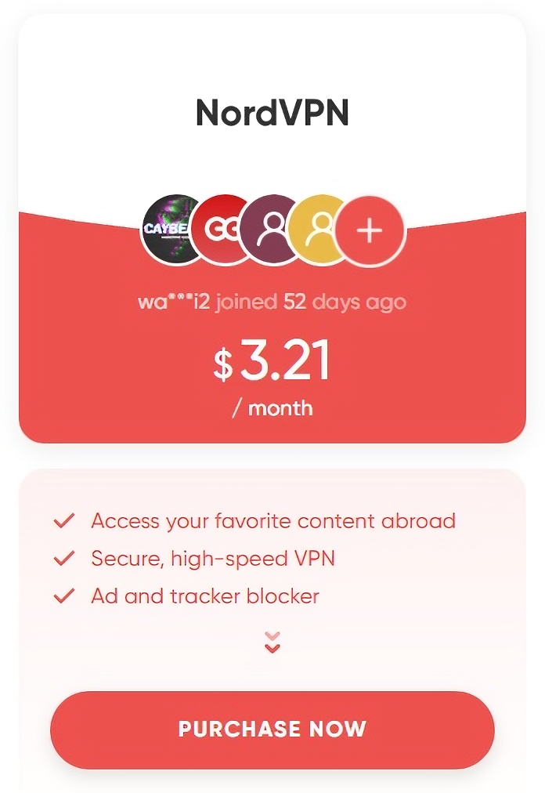2：ExpressVPN — 速度与安全性的首选
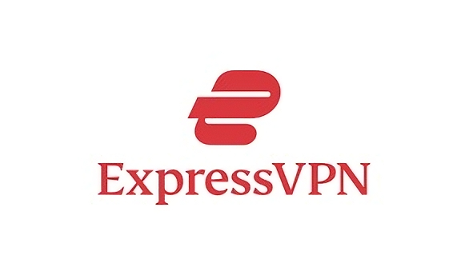全球认可的速度
真正突出的是它的种子下载性能，明显优于许多竞争对手。如果你全年定期下载大文件，ExpressVPN 是最佳选择之一。其大多数服务器已升级到 10Gbps，无论你选择哪个服务器，都能确保快速稳定的连接。
长期可靠性和强大的安全性
最让我放心的是 ExpressVPN 的安全设置。它位于英属维尔京群岛，严格执行无日志政策——这意味着它不会存储用户活动或连接数据。即使政府要求提供信息，它也无需提供任何信息。
ExpressVPN 也是首家采用纯 RAM服务器的主流提供商，所有数据都存储在易失性内存中，并在关机或重启时自动擦除，这提供
简而言之，ExpressVPN 在隐私和安全方面的表现无与伦比。它是少数几个让我感到完全安全的 VPN 之一，即使是处理敏感任务也一样安全。
可靠的高性能服务器
ExpressVPN在 105 个国家/地区运行着 3，000 多台服务器——数量虽非市面上最多，但却是最可靠的服务器之一。每台服务器都升级到 10Gbps，提供快速稳定的连接。
一些 VPN 提供商使用低规格硬件来增加服务器数量，牺牲质量以求数量。ExpressVPN 则采取了相反的做法：服务器数量较少，
最适合谁
远程工作者、国际旅行者、重度流媒体用户、P2P 和 torrent 用户以及注重隐私的个人。
优点和缺点
速度和稳定性 ：卓越的性能，使其成为流媒体和 P2P 下载的首选。-
Lightway 协议 ：一种性能优于 WireGuard 的专有协议。 -
P2P 支持 ：所有服务器都支持 P2P，非常适合大量下载用户。 严格的隐私保护 ：无日志政策，受英属维尔京群岛法律保护，并使用TrustedServer 技术增强隐私。分割隧道 ：允许用户为不同的应用程序定制流量，提供更多控制。全面的设备支持 ：跨平台支持多种设备，最多可同时连接8台设备 。
价格较高 ：与其他一些 VPN 相比，ExpressVPN 的定价相对昂贵。路由器设置复杂性 ：对于不懂技术的用户来说，设置路由器可能具有挑战性（尽管可以使用Aircove 路由器更轻松地进行设置）。
定价
虽然ExpressVPN
3：Surfshark — 2025 年最具价值的 VPN
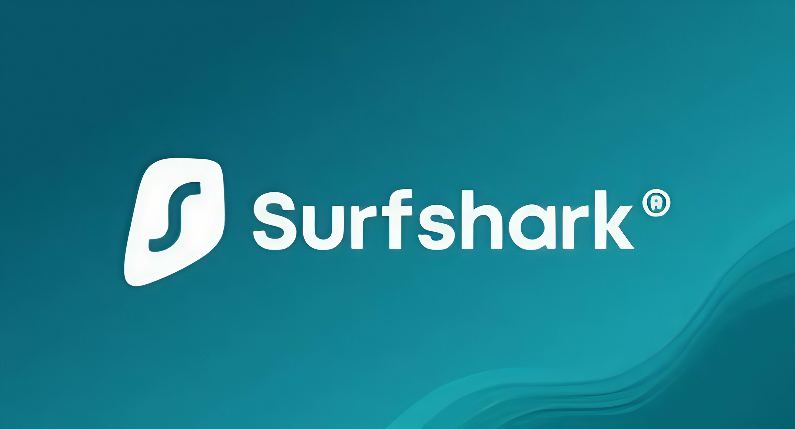速度和稳定性
Surfshark虽然是 VPN 市场中相对较新的参与者（成立于 2018 年），但在速度和稳定性方面已迅速跻身顶级行列。在实际测试中，连接到附近服务器的
Surfshark 还使用仅 RAM 服务器和 WireGuard 协议，提供快速的连接速度和稳定的性能。总的来说，它是目前最均衡的 VPN 之一。
VPN 和防病毒软件合二为一
Surfshark 的功能远超标准 VPN。除了
广泛的服务器选择
Surfshark 在 100 个国家/地区提供3，000 多台服务器，并提供多种服务器类型，尤其适合注重隐私的用户。
最适合谁
注重预算的用户、多设备家庭、注重隐私的个人以及有区域切换需求的用户。
优点和缺点
无限设备连接 — 适合家庭或团体共享强大的加密功能、多平台支持和丰富的功能 价格实惠，长期优惠 匿名电子邮件、静态 IP 和美国电话号码等增值工具 完成独立无日志审计——完全透明且值得信赖
缺点
总部迁至荷兰 （九眼联盟成员国之一），但仍受严格的 GDPR 监管某些高级功能（例如 Surfshark One）需要额外订阅
为什么它的价值最高
我使用 Surfshark 很久了，经过多次实际测评，我可以自信地说它性价比最高。每月只需 700 韩元左右，即可无限量共享设备，几乎可以毫不费力地与朋友分享。
速度稳定，功能不断更新（例如 Multihop 和内置防病毒软件），并提供
4：ProtonVPN——专注于安全和隐私保护
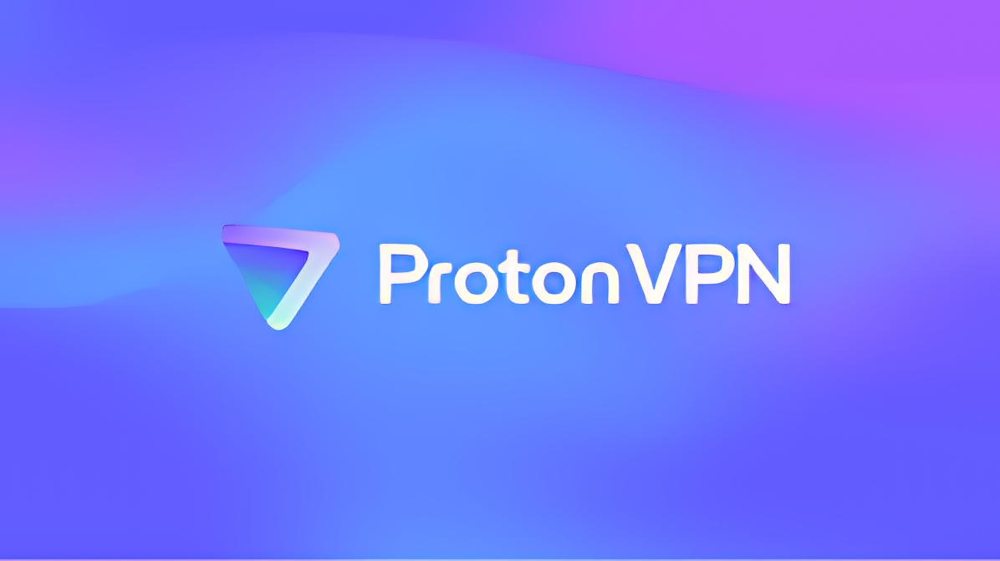速度和稳定性
我满怀期待地试用了 Proton VPN，尤其是它的
对于带宽需求较高的用户，Proton VPN 可能无法提供你所期望的性能。
安全
ProtonVPN 的突出特点之一是其
它在中国和俄罗斯等高风险地区提供额外的隐私保护。但是，使用
服务器网络
截至
此外，由于 Tor 网络上的出口节点不受保护，因此通常认为使用 VPN 是最安全的。
最适合谁
ProtonVPN 非常适合开源倡导者、注重隐私的用户以及需要高级匿名性的用户。它也非常适合已加入Proton 生态系统（例如
优点和缺点
开源客户端， 操作透明、值得信赖- 强大的
安全功能 ，如 Secure Core 和 Tor over VPN - 与
ProtonMail 、ProtonDrive 和其他工具集成，创建完整的生态系统 - 已完成
无日志审计 ，并明确承诺隐私保护 - 总部位于
瑞士 ，一个拥有隐私友好法律环境的国家
- 速度一般，尤其是在安全核心模式下
- P2P 支持有限，导致下载体验不佳
- 与同等评级的 VPN 相比，价格更高（Proton Unlimited 起价为 7.99 美元/月）
ProtonMail 提供 IP 信息后声誉受损（虽然与 VPN 服务无直接关系，但影响了用户的看法）
定价和无限计划
虽然 ProtonVPN Plus两年计划的价格为
如果你选择无限套餐，你将获得 25 个加密日历、500GB 总存储空间、版本历史记录、文件共享加密等功能。企业用户可以参考商务套餐，了解访问控制和端点安全等附加功能。
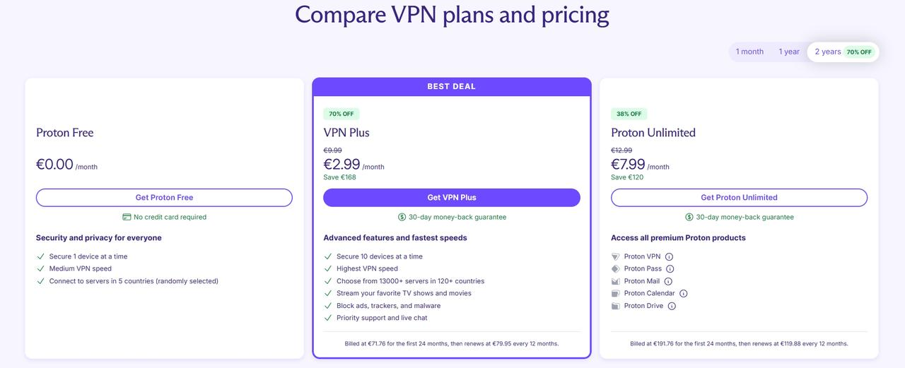5：Mullvad VPN — 隐私至上，但性能平庸
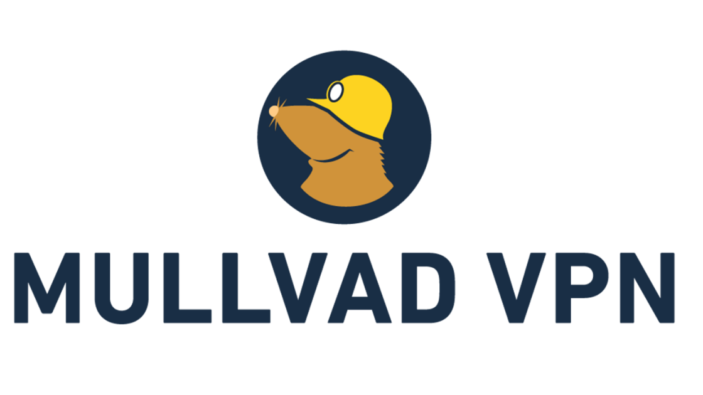速度和稳定性
Mullvad VPN 在美国、日本、新加坡、英国和巴西等地使用 OpenVPN 和 WireGuard 协议进行的测试中表现始终良好，速度波动极小，整体数据传输质量良好。然而，其服务器覆盖范围有限，仅覆盖
在亚洲，Mullvad 仅有
独特的隐私政策
Mullvad 的与众不同之处在于其隐私至上的理念。创建账户无需任何个人信息，只需生成一个
此外，Mullvad 还与 Firefox 的创建者Mozilla 基金会合作，这体现了其对隐私和安全的承诺。
较小的服务器网络
Mullvad 的服务器网络相对较小，在
在韩国进行速度测试期间，我注意到速度有显著变化，特别是连接到某些地区的服务器时，速度损失和波动较大。
最适合谁
Mullvad 非常适合注重隐私的用户、开源爱好者以及精通技术的用户。对于短期旅行者以及不注重流媒体服务的用户来说，它也是一个不错的选择。
优点和缺点
- 注册时无需提供个人信息，确保匿名
- 支持现金和加密货币支付
- 强大的安全功能和出色的广告拦截功能
- 开源，运营透明
- 不支持解锁
Netflix 或Prime Video等主流流媒体服务 - 没有实时聊天支持
- 服务器数量有限，亚洲地区表现不佳
每月订阅 5 欧元 ，无折扣或年度计划- 2025年退款期限从
30天 缩短至14天
每月定价
Mullvad的月费固定为
6：PureVPN——一家正在卷土重来的老牌服务提供商
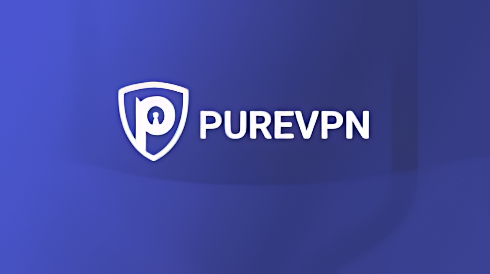速度和稳定性
PureVPN 拥有遍布65 多个国家的6，000 多台服务器网络，其中
改变管辖范围以加强安全
我之前对 PureVPN 的印象并不好，但最近重新评估后，我发现它的表现远超预期，尤其是在合约条款和管辖权方面。PureVPN 现已将其管辖权迁移至
此外，PureVPN 已经通过了
最适合谁
优点和缺点
- 遍布众多国家的
广泛服务器网络 - 全天候实时聊天，提供
快速客户支持 价格具有竞争力 ，适合长期使用- 获得ISO 27001认证并通过
四次外部安全审核
- 实际测试中
速度较慢，尤其是在亚洲 流媒体解锁性能不稳定 ，不适合Netflix 和其他娱乐服务
定价
PureVPN提供三种不同的套餐：Max、Plus 和 Standard。如果你只需要 VPN 功能，那么 Standard 套餐是最佳选择，因为它专注于提供基本的 VPN 服务，不包含密码管理器或文件加密应用程序等额外功能。
7：CyberGhost VPN — 服务器众多，但性能不稳定
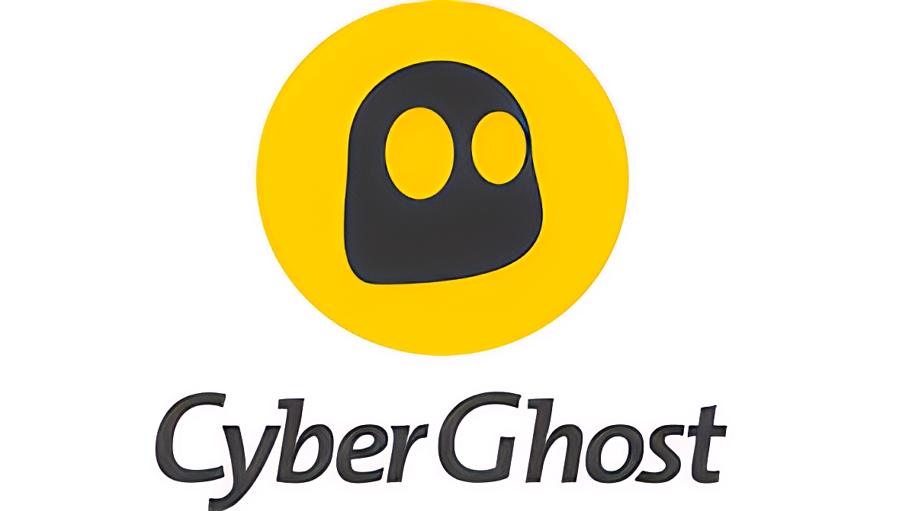速度和稳定性
CyberGhost VPN 拥有覆盖100 多个国家/地区的12，000 多台服务器的全球网络，使其成为服务器数量最多的 VPN 提供商之一。然而，实际性能并不总是与数据相符，尤其是对于
积极的一面是，它在
安全
在使用 CyberGhost 时，我对它的隐私政策有些担忧。尽管 CyberGhost 声称自己不属于任何情报联盟，并且已经通过了
在功能方面，CyberGhost 支持主流平台，最多可同时连接
流媒体服务器
访问流媒体服务器时，你会发现一长串选项，每个选项都针对不同的国家/地区和不同的服务提供专用服务器。这对于专注于特定流媒体服务的用户来说非常有用。
最适合谁
对于
优点和缺点
行业领先的服务器数量 （100 多个国家/地区的 12，000 多台服务器）-
24/7 实时聊天支持 - 广泛的
专用 IP 选项 - 支持使用
专用 P2P 服务器进行种子下载 -
45天退款政策
亚洲 （尤其是韩国） 的连接不稳定 且速度较慢 - 没有
1 年计划 ，只提供6 个月 或2 年计划 - 缺乏高级隐私功能，例如
多跳 或仅 RAM 服务器
定价和长期退款政策
如果你选择
总的来说，如果你正在寻找
8：AdGuard VPN — 从广告拦截到隐私保护
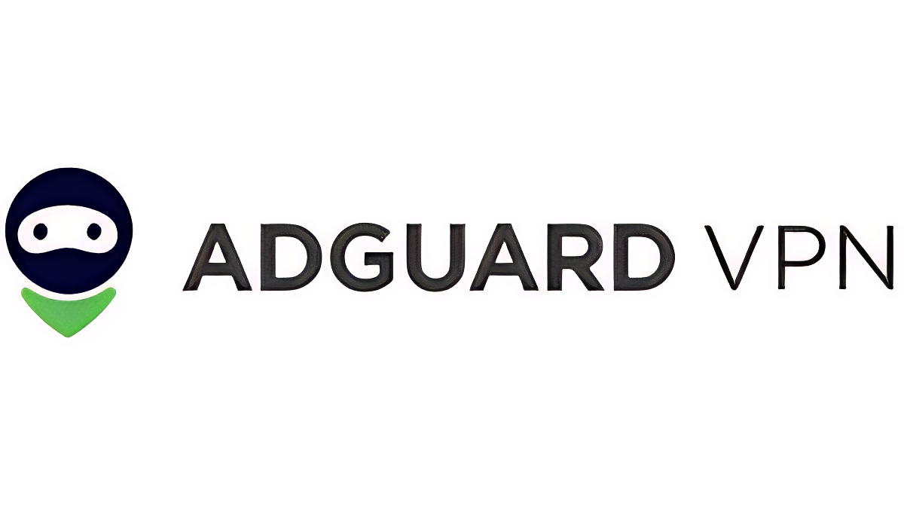速度和稳定性
AdGuard VPN 使用其专有协议（AdGuard 协议），该协议基于
安全
在使用 AdGuard VPN 时，我注意到其隐私保护和安全功能既有优点，也有缺点。其中一个主要缺点是 AdGuard 缺乏
积极的一面是，AdGuard 的支持渠道有些有限。它没有实时聊天支持，只能通过电子邮件、Telegram 群组和官方论坛获得帮助，这在你需要快速获得帮助时可能会很不方便。
服务器网络
最适合谁
AdGuard 非常适合以前依赖其广告拦截功能的用户、需要 VPN 进行浏览的用户、想要尝试新兴协议的用户以及对
优点和缺点
- 可与广告拦截功能一起使用（尤其适用于 Android）
- 免费试用，提供 3GB 数据
- 多平台支持，包括浏览器扩展
- 没有实时聊天支持，响应时间慢
- P2P 下载速度非常慢
- 偶尔服务器不稳定
定价（免费版）
使用AdGuard VPN后，我发现它的定价非常吸引人，尤其适合预算有限的用户。

9：VPN Unlimited — 功能丰富，终身套餐价格实惠
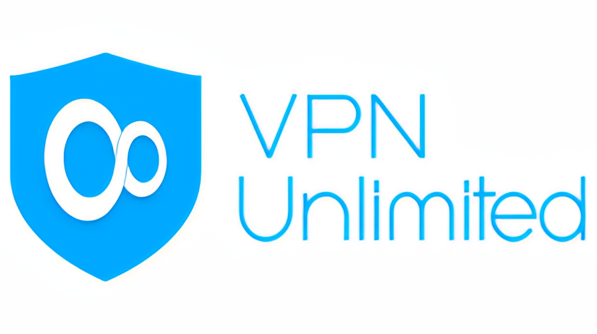速度和稳定性
尽管VPN Unlimited的声誉曾因其隐私政策而受到质疑，但它在速度测试中的表现依然稳健，尤其是在
安全
VPN Unlimited 在安全性和功能性方面都表现出色。它支持多种协议，其中最让我印象深刻的是其专有的KeepSolid Wise协议。该协议支持
付费用户还可以访问多个国家的专属服务器和
服务器网络
VPN Unlimited 提供
终身计划
对于那些寻求
优点和缺点
终身计划 提供较低的长期成本- 多种协议选项，包括具有强大渗透能力的专有
KeepSolid Wise 专用 IP 和专属服务器 ，可实现高度定制- 集成
MonoDefense 安全套件
日志记录政策不明确 ，数据可能存储长达7 年 -
"无限设备"的 说法具有误导性——额外的设备需要额外付费 每月/每年订阅的 性价比低于Surfshark等竞争对手
定价
使用 VPN Unlimited 后，我发现它的订阅方案非常灵活，可以满足不同的用户需求。不过，价格偏高。MonoDefense

10：FastestVPN — 高价值的"全能预算"VPN
速度和稳定性
尽管名为"最快"，FastestVPN 的速度表现并非顶级。不过，它在
虽然它的速度不如
安全
我最初将 FastestVPN 视为典型的"廉价低质"VPN，因此很长一段时间内我从未认真考虑过它。然而，在重新审视它之后，尤其是从隐私保护的角度，我的看法发生了改变。FastestVPN 的总部位于
真正改变我看法的是，
服务器网络
最适合谁
FastestVPN 非常适合注重预算的用户、VPN 初学者、多设备用户、需要广告拦截和多跳加密等功能的高级用户，以及关心隐私但不需要极端严格的用户。
优点和缺点
价格低得令人难以置信 （终身 计划仅需40 美元 ）功能丰富， 包括广告拦截、多跳、隧道分离和密码管理器- 支持多种平台，包括
Linux 和主要发行版
- 高峰时段速度表现不那么"快"
- 一些
免费的附加功能 需要单独付费才能解锁 - 与顶级 VPN 相比，某些地区的服务器数量有限
定价
重新评估FastestVPN后，我发现它不仅仅是"便宜"，而是
我还惊喜地发现它提供
概括
到目前为止，你可能已经注意到，真正优秀的 VPN 不仅仅拥有强大的加密功能或快速的连接速度——它们在你最看重的方面也表现出色。如果你优先考虑
如果你想要一款全面且不失各方面的
常问问题
1：使用免费VPN安全吗？
大多数免费VPN都存在隐私风险，因为它们可能会收集你的个人数据、浏览历史记录，甚至将你的数据出售给第三方。因此，如果你重视隐私和安全，不建议长期使用免费VPN。拥有透明隐私政策和无日志保证的付费服务是更安全的选择。
2：为什么无日志 VPN 很重要？
3：VPN 会影响我的网速吗？
是的，VPN 会影响你的网速，因为所有互联网流量都经过加密并通过 VPN 服务器路由，这通常会增加延迟。但是，高质量的 VPN 服务可以最大限度地减少速度损失，尤其是在选择像